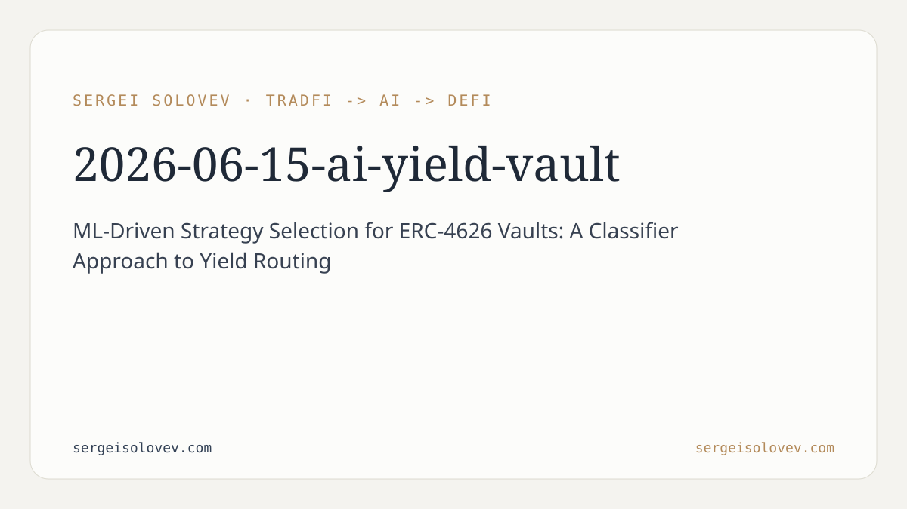

```markdown
---
title: "ML-Driven Strategy Selection for ERC-4626 Vaults: A Classifier Approach to Yield Routing"
date: 2026-06-15
slug: ai-yield-vault
meta_description: "How ML classifiers trained on yield curves, gas prices, and protocol risk metrics can automate capital routing in ERC-4626 yield vaults."
tags: [DeFi, ERC-4626, ML, yield-optimization, MCDM]
canonical_doi: 10.6084/m9.figshare.32141167
---
Most yield vaults in production today are governed by manually tuned heuristics or governance votes that update weekly at best. The people writing those heuristics are smart, but the market is faster. Gas prices spike in the middle of a rebalance window, a lending protocol's utilization hits 95% and APY collapses, a new incentive program launches on a competing pool — and the vault just sits there, locked into whatever allocation passed the last snapshot vote. The opportunity cost is systematic and largely invisible, buried in APY underperformance that users attribute to "market conditions." The real cause is that strategy selection in multi-source yield vaults is a latency and dimensionality problem that discretionary governance cannot solve at runtime. This paper is my attempt to formalize what a machine learning layer on top of ERC-4626 actually looks like, and where it breaks.
ERC-4626 is the tokenized vault standard. It standardizes the interface for depositing assets, minting shares, and redeeming underlying — which means any compliant vault can slot into the same aggregation infrastructure. That composability is exactly what makes multi-strategy routing tractable: you have a well-defined set of yield sources, each exposing the same function signatures, and the vault's job is to decide how much capital to allocate to each of them at any given moment.
The core contribution of this work is training a set of classifiers to make that allocation decision. The input feature space covers three domains: historical yield curves for each candidate strategy (rolling windows of realized APY, volatility, and drawdown), gas price time series (since rebalancing costs destroy alpha on small positions or during high-congestion periods), and protocol risk metrics (TVL concentration, audit recency, oracle dependency, governance token distribution). None of these inputs are exotic — they are available on-chain or through standard data providers. What the classifier adds is a learned mapping from this feature vector to a discrete allocation decision: route to strategy A, strategy B, or a mixed allocation across a predefined set.
The training procedure treats this as a supervised classification problem. We construct labels from historical data by asking, in hindsight, which strategy would have produced the best risk-adjusted return over the next epoch given the conditions at decision time. That label generation is the most brittle part of the pipeline, and I will come back to it in the limitations section. We tested gradient boosted trees, random forests, and a lightweight feedforward network. GBT won on the validation set across most configurations — not surprising given the tabular structure of the feature space and the relatively small dataset sizes available for any single protocol.
Pure return maximization is wrong for a vault. Sophisticated depositors care about drawdown risk, smart contract exposure, and liquidity — they are not just buying APY. We encode these preferences as a multi-criteria decision-making objective: the classifier does not simply maximize expected yield, it selects the strategy that dominates across the weighted objective space defined by the vault's risk parameters. In practice this means the model's output is constrained by hard limits on single-strategy concentration, minimum liquidity thresholds, and maximum acceptable protocol risk scores. The classifier proposes an allocation; the MCDM filter either passes it or falls back to the current allocation if the proposal violates any constraint.
This two-stage design — learned classifier followed by rule-based constraint enforcement — is deliberate. The constraint layer is auditable and predictable, which matters for any protocol that wants to pass a security review or publish a risk disclosure. Putting risk constraints inside the model weights would make them opaque and hard to update without full retraining. Keeping them outside means a governance vote can tighten concentration limits without touching the model at all.
For the DeFi side: the model outperforms static allocation and simple APY-chasing heuristics in backtests across the protocols we evaluated. More importantly, it avoids several failure modes that pure yield-maximizers hit regularly — chief among them the gas-trap, where frequent rebalancing into marginally higher-yield strategies nets negative alpha after transaction costs. The gas price feature is load-bearing here; removing it from the feature set meaningfully degrades performance during high-congestion periods. If you are building or auditing a yield aggregator, the takeaway is that gas costs need to be first-class inputs to your routing logic, not afterthoughts.
For the ML side: DeFi yield routing is an underexplored application domain with some genuinely interesting properties. The data is public and immutable. The ground truth labels are derivable from on-chain history. The production environment is adversarial in predictable ways (MEV, liquidation cascades, governance attacks). And the feedback loop between model behavior and market state is real — if enough capital uses the same routing model, the yield differentials that trained it will compress. That last property is not unique to finance, but it is particularly acute here because the capital flows are visible in real time. Any serious deployment of this architecture needs to treat model-induced market impact as a design constraint, not a side effect.
The MCDM framing also has broader applicability. Multi-objective optimization under hard constraints is a common problem in portfolio construction, resource allocation, and infrastructure scheduling. The pattern of learned ranker plus rule-based constraint filter is clean and generalizable. The main contribution is not the specific model — GBT on tabular features is not novel — it is the feature engineering choices and the demonstration that this architecture produces coherent, auditable decisions in a live financial environment.
The label generation procedure assumes that the historically optimal strategy (in hindsight) is the correct training target. This is survivorship-contaminated: we only have yield history for protocols that survived. Strategies that were optimal on the training distribution and then failed due to exploits or bank runs are underrepresented in the label space, which means the model is implicitly optimistic about tail risk in ways that are hard to quantify from the outside. The protocol risk feature attempts to partially correct for this, but it is a lagging indicator by construction.
The other major limitation is regime sensitivity. The classifier was trained on a specific market environment. Yield compression across DeFi, a sustained bear market, or a structural change in gas economics (EIP-7691 blob expansion, for example) could shift the feature distributions enough that the model's learned boundaries are no longer valid. Continuous retraining mitigates this but introduces its own risks — specifically, the risk that a model trained on a recent crash learns to park everything in stablecoins and stays there. The next iteration of this work will focus on online learning approaches that can update the allocation policy incrementally without full retraining, and on out-of-distribution detection so the system knows when to fall back to a conservative default rather than extrapolate.
Regulatory signal is also absent from the current feature set. Enforcement actions, OFAC designations, and jurisdictional liquidity fragmentation are increasingly material to protocol viability but are not on-chain and do not lend themselves to clean numerical encoding. That is an open problem I do not have a good answer to yet.
The preprint is available at the DOI below. Code and dataset will follow in a subsequent release.
---
```bibtex
@misc{solovev2026aiyieldvault,
author = {Solovev, Sergei},
title = {{AI-Yield-Vault: ML-Driven Strategy Selection for ERC-4626 Vaults}},
year = {2026},
publisher = {figshare},
doi = {10.6084/m9.figshare.32141167},
url = {https://doi.org/10.6084/m9.figshare.32141167},
note = {Preprint}
}
```
```